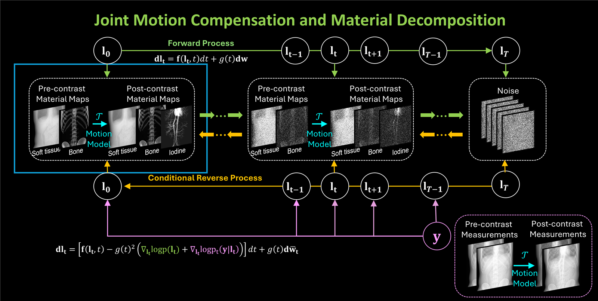
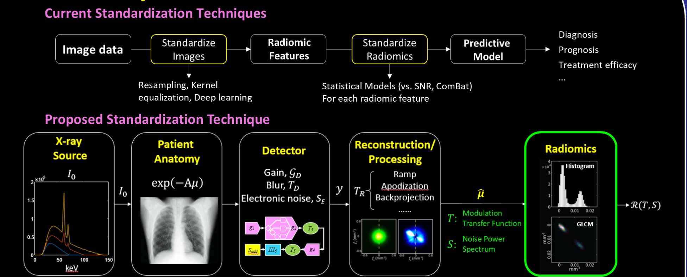
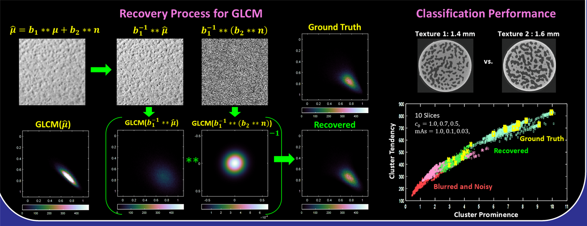
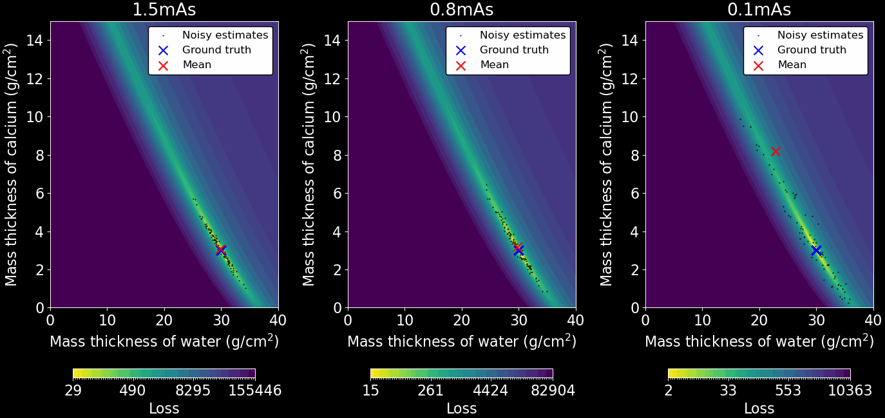
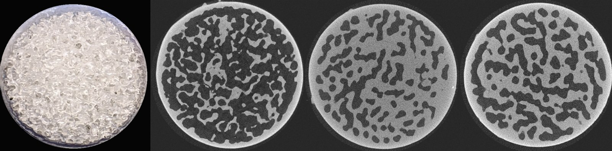
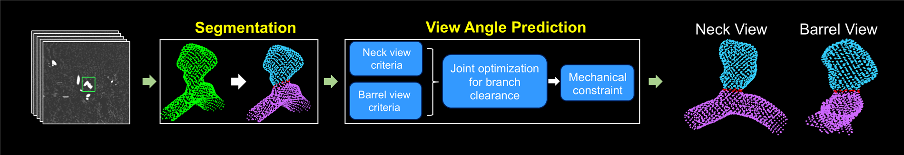
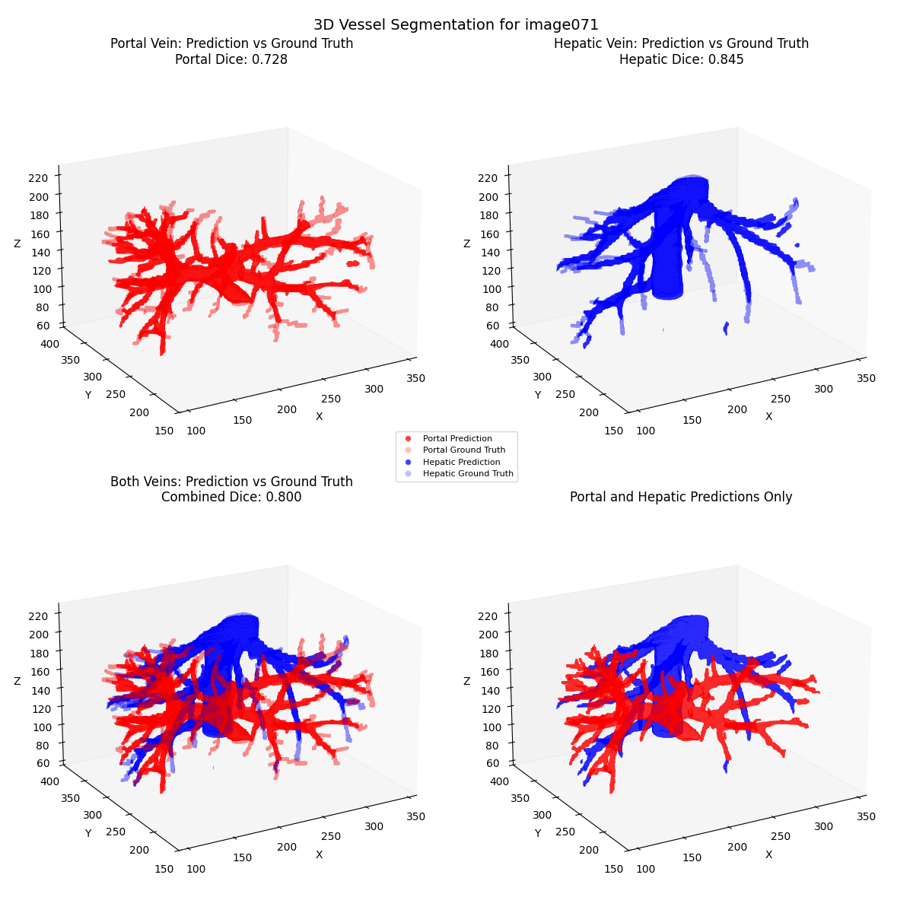
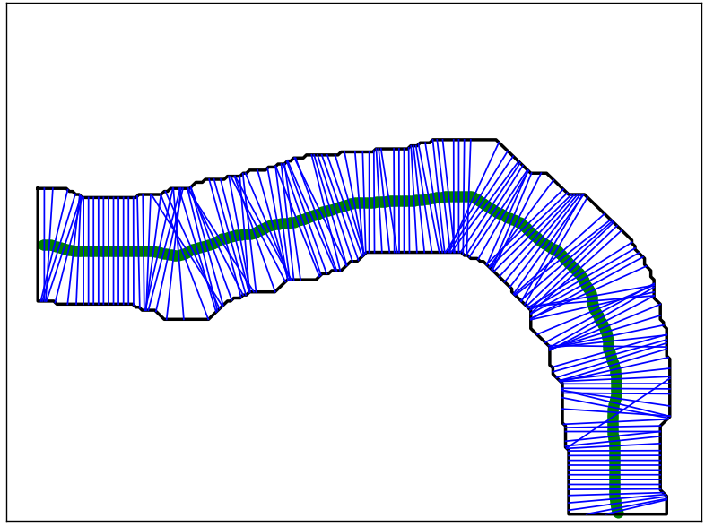

From blackboard to benchtop to bedside — we develop CT and cone-beam CT technologies grounded in a rigorous understanding of image science.
Theme 1
Conventional circular scan orbits suffer from cone-beam artifacts and severe metal artifacts near implants and surgical hardware. We design and implement novel orbits — such as sawtooth and universal metal-tolerant trajectories — on clinical robotic C-arm systems (e.g., Siemens ARTIS pheno), including fully automatic online geometric calibration with arbitrarily placed fiducials.
Theme 2
We design and optimize spectral detector hardware, including a triple-layer flat-panel detector enabling three-material decomposition (soft tissue, bone, iodine/gadolinium contrast), and study photon-counting CT systems with realistic models of charge sharing, pulse pileup, and nonuniform response.
Temporal subtraction in DSA is highly sensitive to patient motion. Our joint spectral-temporal processing strategy combines energy-resolved measurements across time frames, improving vessel visibility and motion robustness for interventional angiography.
Theme 3

Deep learning reconstruction and denoising algorithms are nonlinear and data-dependent, so traditional image quality metrics do not directly apply. We develop assessment frameworks for these algorithms and study how to communicate their variability to radiologists.
We develop diffusion-based reconstruction methods conditioned on physically accurate, nonlinear measurement models. Because these methods sample from a posterior distribution, they also offer a principled way to quantify uncertainty and communicate it to radiologists. Related work uses generative networks to synthesize realistic lesions for algorithm development and evaluation.
Theme 4




Radiomic features feed predictive models for diagnosis, prognosis, and treatment response — but they vary with scanner, dose, and reconstruction kernel. We derived a theoretical framework that models how blur and noise corrupt features such as gray-level co-occurrence matrices, and recover the underlying ground-truth values.
A long-standing foundation of the lab is the quantitative assessment of imaging performance with respect to the clinical task. We have extended classical analysis frameworks to nonlinear and data-dependent algorithms, and validate predictions experimentally using 3D-printed, patient-specific phantoms developed with the PixelPrint collaboration.
Theme 5

During endovascular treatment of intracranial aneurysms, finding the optimal C-arm working angle is time-consuming and operator-dependent. We developed a neural network-based system that automatically predicts optimal viewing angles from pre-operative imaging, in collaboration with the Department of Neurosurgery at Penn and Siemens Healthineers.
We develop quantitative analysis methods for vascular imaging that extract vessel geometry and flow information from DSA and CT, supporting diagnosis and treatment planning in neurovascular and hepatic applications.


Collaboration